ตะเกียงโหลแก้ว ตะเกียงโหลแก้ว | 1 | 47 | ไม่มีธาตุ | วิญญาณเทียน 0.25% |
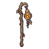 ตะเกียงน้ำเต้าแกะสลัก | 4 | 42 | ไฟ | น้ำเต้าตะเกียง ร่างไฟเขียว 0.12% |
 ตะเกียงกาต้มน้ำ ตะเกียงกาต้มน้ำ | 5 | 48 | ไม่มีธาตุ | หิ่งห้อยหมอยา 0.25% |
| ตะเกียงฟักทองจอมซน | 8 | 42 | ไฟ | ฟักทองจอมซน 0.06% |
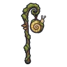 ตะเกียงเปลือกหอยทาก | 10 | 48 | ดิน | ผีเสื้อผงหลับ 0.25% |
 ตะเกียงหิ่งห้อย ตะเกียงหิ่งห้อย | 13 | 44 | ไม่มีธาตุ | ผีเสื้อราตรีเรืองแสง 0.12% |
 ตะเกียงรังผึ้ง ตะเกียงรังผึ้ง | 16 | 44 | ลม | ผึ้งยักษ์ 0.12% |
| ตะเกียงสไลม์เรืองแสง | 19 | 42 | พิษ | สไลม์เรืองแสง 0.06% |
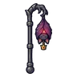 ตะเกียงราชาค้างคาว | 23 | 58 | มืด | ราตรีราชาค้างคาว 0.5% |
 ตะเกียงรั้วทองเหลือง ตะเกียงรั้วทองเหลือง | 26 | 79 | ไม่มีธาตุ | ภูตพายุหิมะ 0.25% |
| ตะเกียงจิ้งจอกถ่านแดง | 28 | 71 | ไฟ | จิ้งจอกถ่านแดง 0.12% |
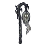 ตะเกียงผ้าคลุมแม่ม่ายหมอก | 28 | 68 | วิญญาณ | แม่ม่ายหมอก 0.06% |
 ตะเกียงสังกะสีเจาะลาย ตะเกียงสังกะสีเจาะลาย | 30 | 75 | ไม่มีธาตุ | ผีดวงไฟ ร่างม่วงหม่น 0.25% |
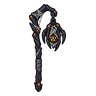 ตะเกียงแมงมุมทอเถ้า | 30 | 68 | ไฟ | แมงมุมทอเถ้า 0.06% |
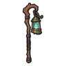 ตะเกียงหลงทาง | 32 | 77 | วิญญาณ | ตะเกียงหลงทาง ร่างเปลวฟ้า 0.5% |
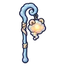 ตะเกียงปุยเมฆ | 32 | 71 | ลม | อินทรีพายุ ร่างฟ้าผ่า 0.12% |
 ตะเกียงกะโหลกทหาร ตะเกียงกะโหลกทหาร | 34 | 75 | ไม่มีธาตุ | วิญญาณเทียน 0.25% |
| ตะเกียงหางแมงป่อง | 36 | 68 | พิษ | แมงป่องแดง 0.06% |
 ตะเกียงกรงผีน้อย ตะเกียงกรงผีน้อย | 38 | 71 | วิญญาณ | รถเข็นแร่ผีสิง 0.12% |
 ตะเกียงดวงจันทร์น้อย ตะเกียงดวงจันทร์น้อย | 40 | 68 | ศักดิ์สิทธิ์ | ชาวบ้านกลวง 0.06% |
 ตะเกียงขอนไม้กลวง ตะเกียงขอนไม้กลวง | 42 | 71 | ไม่มีธาตุ | ลูกเห็ดพราย 0.12% |
| ตะเกียงราชาเห็ดเรืองแสง | 44 | 92 | พิษ | ราชาเห็ดเรืองแสง 0.5% |
 ตะเกียงปลาเรืองแสง ตะเกียงปลาเรืองแสง | 45 | 68 | น้ำ | หมาป่าหิมะ 0.06% |
| ตะเกียงรังนางพญามด | 49 | 92 | ดิน | รังนางพญามด 0.5% |
 ตะเกียงเหยื่อปลาตกเบ็ด ตะเกียงเหยื่อปลาตกเบ็ด | 51 | 98 | น้ำ | ปลาตกเบ็ดหนอง ร่างแสงม่วง 0.24% |
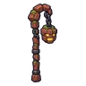 ตะเกียงหัวโกเลม | 53 | 109 | ดิน | ตู้เอกสารโล่ 0.25% |
 ตะเกียงหม้อข้าวหม้อแกงลิง ตะเกียงหม้อข้าวหม้อแกงลิง | 55 | 98 | พิษ | ดอกแม่พิษ 0.12% |
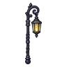 ตะเกียงเหล็กดัดคนจุดไฟ | 58 | 104 | ไม่มีธาตุ | หนังสือบิน 0.25% |
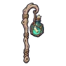 ตะเกียงขวดจดหมาย | 60 | 98 | ไม่มีธาตุ | อิมป์เปลวไฟ ร่างไฟฟ้า 0.12% |
 ตะเกียงซาลาแมนเดอร์ ตะเกียงซาลาแมนเดอร์ | 62 | 93 | ไฟ | ซาลาแมนเดอร์ 0.06% |
 ตะเกียงหมอกเงา ตะเกียงหมอกเงา | 64 | 98 | มืด | คนกรอกแสง 0.12% |
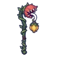 ตะเกียงดอกไม้เหยื่อล่อ | 66 | 93 | ไม่มีธาตุ | ดอกไม้กินคน 0.06% |
 ตะเกียงคนขายตะเกียงกลวง ตะเกียงคนขายตะเกียงกลวง | 68 | 98 | ไฟ | คนขายตะเกียงกลวง 0.12% |
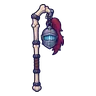 ตะเกียงหมวกอัศวินกระดูก | 68 | 98 | ไม่มีธาตุ | อัศวินกระดูก 0.12% |
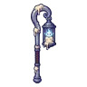 ตะเกียงวิญญาณเทียน | 71 | 93 | วิญญาณ | วิญญาณเทียน 0.06% |
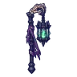 ตะเกียงราชาสุสาน | 74 | 127 | มืด | บัลลังก์ราชาสุสาน 0.5% |
 ตะเกียงประภาคาร ตะเกียงประภาคาร | 77 | 130 | ไม่มีธาตุ | ผลึกดาวมีชีวิต 0.25% |
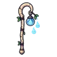 ตะเกียงคนเลี้ยงดวงไฟ | 79 | 118 | วิญญาณ | หนังสือบิน 0.06% |
 ตะเกียงแขนต้นไม้โบราณ ตะเกียงแขนต้นไม้โบราณ | 80 | 138 | ไม่มีธาตุ | ต้นไม้ยักษ์โบราณ 0.25% |
 ตะเกียงน้ำแข็ง ตะเกียงน้ำแข็ง | 82 | 123 | น้ำ | พลีซิโอซอร์ 0.12% |
 ตะเกียงค้างคาวเปลวไฟ ตะเกียงค้างคาวเปลวไฟ | 84 | 131 | ไฟ | ค้างคาวเปลวไฟ 0.25% |
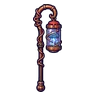 ตะเกียงขวดพายุ | 86 | 118 | ลม | หุ่นระฆังจ่าฝูง 0.06% |
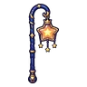 ตะเกียงดาวทอง | 88 | 123 | ศักดิ์สิทธิ์ | ทหารวิหาร 0.12% |
 ตะเกียงผีเสื้อราตรี ตะเกียงผีเสื้อราตรี | 91 | 118 | มืด | ผู้ตีระฆังกลวง 0.06% |
| ตะเกียงมังกรลาวา | 95 | 161 | ไฟ | หัวใจมังกรลาวา 0.5% |
 ตะเกียงเลี้ยงภูต ตะเกียงเลี้ยงภูต | 98 | 177 | มืด | บอสผู้ถูกรากสิง |
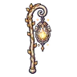 ตะเกียงไฟแรกแห่งแคมป์ | 99 | 174 | ไฟ | ดรอปทั่วโลก Lv 90+ |